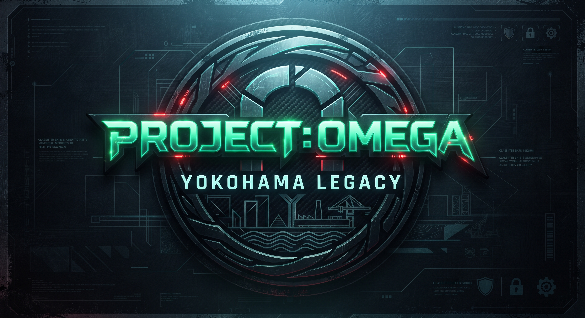

【エージェントへの指令とお願い】
・制限時間：2時間
・周囲の安全に注意し、歩きスマホは絶対におやめください。
・歩道や公共のルールを厳守し、絶対に走らないこと。
現在地: 取得中...
ターゲットとの距離: 待機中...
作戦終了まで: --分 --秒
📡 敵の無線通信を傍受・解析せよ。
横浜の海沿いを巡り、岡本正造の遺した暗号を解き明かせ。
【問題】
港町を見下ろす赤い靴の少女像、その近くに眠る最初のキーワードを見つけ出せ。
ヒント: 山下公園の周辺を探索せよ。
【問題】
海に浮かぶ巨大な歴史的船舶。そのスクリュー付近に隠された数字の合計は？
ヒント: 氷川丸の看板や案内板を注視せよ。
【問題】
波間に浮かぶ巨大なクジラの背中。そのウッドデッキの先端に刻まれた、座標を示す数字を暴け。
ヒント: 大さん橋の屋上（くじらの背中）の先端を確認せよ。
【問題】
歴史ある倉庫群のなかに刻まれた、かつてのレンガ職人のイニシャルを繋げ。
ヒント: 赤レンガ倉庫の壁面やモニュメントに注目せよ。
【問題】
すべての情報を統合せよ。かつての巨大ドックが眠るこの地で、スパイが狙う中枢データの解読キーは？
ヒント: これまで集めたすべてのピースを組み合わせろ。